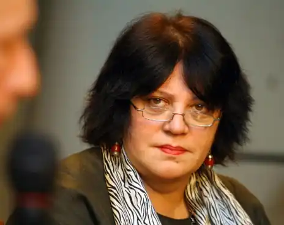
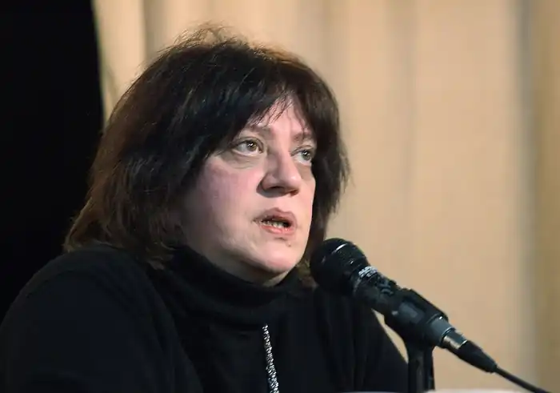
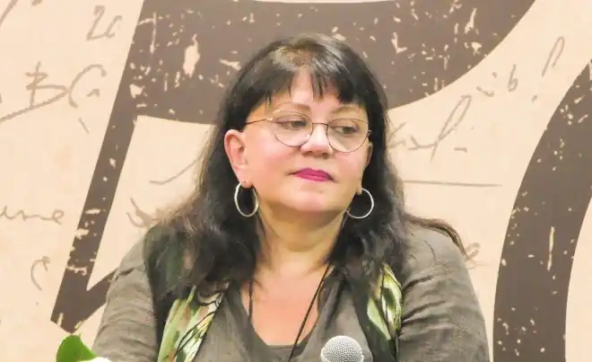

Російська письменниця Тетяна Микитівна Толстая з'явилася на світ в Ленінграді. Тетяна народилася в родині з багатими літературними традиціями — дідусь Толстой по лінії матері — поет Михайло Лозинський, дідусь по лінії батька — відомий радянський письменник Олексій Толстой; його дружина, бабуся Тетяни — поетеса Наталія Крандієвська. Батько майбутньої письменниці — доктор фізичних наук, професор Микита Толстой. Сім'я Толстих була багатодітною, у Тетяни було семеро братів і сестер.
Закінчивши школу, Тетяна Толстая надходить на філологічний факультет Ленінградського університету (нині — СПбДУ). Спеціалізація Толстой — стародавні мови: латинь і грецький. У 1974 році Тетяна закінчує університет і виходить заміж за філолога А. Лебедєва, переїжджаючи незабаром разом з чоловіком в столицю. У Москві Товста влаштовується на роботу в Головну редакцію східної літератури при видавництві "Наука", де на посаді коректора вона пропрацювала майже десять років, до 1983 року. Рік звільнення з "Науки" став для Толстой роком літературного дебюту. У тому ж році Тетяна дебютує і як літературний критик, опублікувавши в "Питаннях Літератури" свою першу критичну статтю. Поштовхом до початку літературної творчості для Тетяни стала операція на очах. Після корекції зору в ті році пов'язку знімали мінімум через місяць, і в той час, поки Товста лежала без діла з пов'язкою на очах, в її голові стали народжуватися перші сюжети, згодом перетворилися в розповіді "На золотому крильці сиділи ...", "Соня" , "Побачення з птахом".
Літературний дебют письменниці відбувся у 1983 році. У журналі "Аврора" було опубліковано оповідання "На золотому крильці сиділи ...". Літературні критики і читачі сприйняли розповідь з ентузіазмом, за підсумками року твір було визнано кращим літературним дебютом 1983 року. У творі калейдоскопічно були представлені враження дитини, починаючи від пересічних побутових подій і повсякденних зустрічей до таємничих і казкових персонажів, народжених дитячої фантазією. Після успіху розповіді в так званих "товстих журналах" — "Новий світ", "Аврора", "Зірка" — публікуються її розповіді "Побачення з птахом" (1983), "Соня" (1984), "Чистий аркуш" (1984) , "любиш — не любиш" (1984) та інші. Всього в період з 1983 по 1988 рік в радянській періодиці було опубліковано більше двадцяти оповідань, що склали в 1987 році дебютна збірка письменниці "На золотому крильці сиділи ...". У розповідь крім опублікованих раніше і готуються до друку увійшли ніде не публікувалися "Мила Шура", "Факір" і ін. У 1988 році Тетяна Толстая стала членом Спілки письменників СРСР. На відміну від першої публікації, інші твори Тетяни Толстої були зустрінуті критикою не настільки захоплено. Товсту звинувачували в "густоті листи", надто насиченою образності з одного боку, і "шаблонності", побудові всіх оповідань за одним сценарієм з іншого. Незважаючи на нападки критиків, Тетяна Толстая стає шановним в письменницькому середовищі самобутнім, незалежним автором. Крім Толстой, тоді майже ніхто не наважувався писати про "міських божевільних" — стареньких, геніальних поетів, недоумкуватих інвалідів, які живуть і гинуть у міщанській міському середовищі. У 1989 році Товста стає членом Російського ПЕН-центру. З 1990 року Тетяна Толстая переїжджає в Сполучені Штати Америки, грунтуючись на Прінстоні. У Штатах письменниця викладає російську літературу і російське літературна творчість в Скідморском коледжі, читає лекції в університетах і співпрацює з такими журналами, як "New York review of books" і "The New Yorker". Крім того, Товста зацікавлюється змінами в російській мові за кордоном під дією оточуючих людей і подій, пише кілька наукових статей на тему емігрантського російського і його відмінностей з літературною російською мовою. Програмною статтею її досліджень тих років стає есе "Надія і опора", в якому письменниця наводить ряд цікавих гіпотез, висновків, дає приклади емігрантських американізмів в розмовній російській мові Сполучених Штатів. З 1991 року Тетяна Толстая починає працювати колумністом в "Московских новостях", де веде знамениту авторську колонку "Своя дзвіниця". Через деякий час Тетяна входить до складу редколегії журналу "Столиця", співпрацює з "Російським Телеграфом". Не залишає Тетяна Микитівна і літературну діяльність: дев'яності ознаменувалися виходом таких її книг, як "Любиш — не любиш" (1997), "Річка Оккервіль" (1999) у співавторстві з сестрою Наталією Толстой в 1998 році виходить книга "Сестри". У ті ж роки Тетяна стає популярною і за кордоном — її розповіді видаються французькою, англійською, німецькою, шведською. У 1998 році Товста стає одним із засновників і входить до редколегії американського літературного журналу "Контрапункт". У 1999 році Тетяна повертається на Батьківщину. У Росії письменниця продовжує займатися журналістикою, викладати і створювати літературні твори. 2572/5000 V nachale dvukhtysyachnykh Tat'yana Tolstaya otkhodit ot korotkogo zhanra, v kotorom ona pisala s samogo nachala literaturnoy deyatel'nosti. Iz-pod yeye pera nachinayut vykhodit' krupnyye romany. V 2000 godu v svet vykhodit debyutnyy roman Tolstoy "Kys'", blagosklonno vstrechennyy kritikami i publikoy. Kniga dostatochno bystro stanovitsya bestsellerom i poluchayet premiyu "Triumf". o mnogikh teatrakh Rossii i zarubezh'ya roman byl ispol'zovan v kachestve osnovy dlya postanovok spektakley, s 2001 goda v efire "Radio Rossii" zvuchit literaturnyy radioserial po motivam romana (stsenarist i rukovoditel' proyekta – Ol'ga Khmeleva). Kommercheskiy uspekh Tolstaya zakrepila v 2001 godu, vypustiv srazu tri knigi — "Den'", "Noch'" i "Dvoye" obshchim tirazhom boleye dvukhsot tysyach ekzemplyarov. XIV Moskovskaya mezhdunarodnaya knizhnaya yarmarka vruchayet Tat'yane Tolstoy glavnyy priz v nominatsii "Proza". V 2002 godu pisatel'nitsa stanovitsya glavnym redaktorom izdaniya "Konservator". S 2002 goda Tat'yana Tolstaya poyavlyayetsya v teleefire. Pervym poyavleniyem pisatel'nitsy stalo uchastiye v programme "Osnovnoy instinkt", s oktyabrya togo zhe goda sovmestno s Avdot'yey Smirnovoy Tolstaya vedet teleprogrammu "Shkola zlosloviya". S pervogo po tretiy sezon yavlyalas' chlenom zhyuri teleshou "Minuta slavy". V programme "Bol'shaya raznitsa" dvazhdy poyavlyalis' parodii na Tolstuyu – odin raz pisatel'nitsu parodirovali kak chlena zhyuri "Minuty slavy", a vtoroy – kak sovedushchuyu "Shkoly zlosloviya". V 2003 godu programma Tolstoy i Smirnovoy poluchayet premiyu TEFI v nominatsii "Luchsheye tok-shou". S 2010 goda Tat'yana Tolstaya nachinayet pisat' knigi ne tol'ko dlya vzroslykh, no i dlya detey. V soavtorstve s Ol'goy Prokhorovoy ona vypuskayet knigu "Ta samaya Azbuka Buratino", svyazannuyu obshchim syuzhetom so znamenitoy knigoy dedushki pisatel'nitsa Alekseya Tolstogo "Zolotoy klyuchik, ili Priklyucheniya Buratino". Ideya knigi, po slovam Tolstoy, rodilas' yeshche tridtsat' let nazad, odnako vremeni i vdokhnoveniya na realizatsiyu proyekta ne khvatalo. Odnazhdy v razgovore so svoyey plemyannitsey, Ol'goy Prokhorovoy, Tolstaya upomyanula ob etom, i ta, zagorevshis' ideyey, predlozhila napisat' knigu v soavtorstve. V itoge proizvedeniye zanyalo vtoroye mesto v reytinge detskoy literatury XXIII Moskovskoy knizhnoy yarmarki. Tat'yana Tolstaya zamuzhem za filologom Andreyem Lebedevym, u neye dvoye detey. Starshiy syn – Artemiy, izvestnyy dizayner i rukovoditel' vedushchey art-studii Rossii "Studiya Artemiya Lebedeva". Mladshiy syn Aleksey zhivet v SSHA, fotograf, programmist, arkhitektor komp'yuternykh programm. Aleksey zhenat, detey u nego net. Daleye: https://uznayvse.ru/znamenitosti/biografiya-tatyana-tolstaya.html На початку двохтисячних Тетяна Толстая відходить від короткого жанру, в якому вона писала з самого початку літературної діяльності. З-під її пера починають виходити великі романи. У 2000 році в світ виходить дебютний роман Толстої "Кись", прихильно зустрінутий критиками і публікою. Книга досить швидко стає бестселером і отримує премію "Тріумф". про багатьох театрах Росії і зарубіжжя роман був використаний в якості основи для постановок вистав, з 2001 року в ефірі "Радіо Росії" звучить літературний радіосеріал за мотивами роману (сценарист і керівник проекту — Ольга Хмелева). Комерційний успіх Товста закріпила в 2001 році, випустивши відразу три книги — "День", "Ніч" і "Двоє" загальним накладом понад двісті тисяч примірників. XIV Московська міжнародна книжкова ярмарка вручає Тетяні Толстой головний приз в номінації "Проза". У 2002 році письменниця стає головним редактором видання "Консерватор". З 2002 року Тетяна Толстая з'являється в телеефірі. Першим появою письменниці стала участь в програмі "Основний інстинкт", з жовтня того ж року спільно з Авдотьей Смирнової Товста веде телепрограму "Школа лихослів'я". З першого по третій сезон була членом журі телешоу "Хвилина слави". У програмі "Велика різниця" двічі з'являлися пародії на Товсту — один раз письменницю пародіювали як члена журі "Хвилини слави", а другий — як співведучу "Школи лихослів'я". У 2003 році програма Толстой і Смирнової отримує премію ТЕФІ в номінації "Краще ток-шоу". З 2010 року Тетяна Толстая починає писати книги не тільки для дорослих, але і для дітей. У співавторстві з Ольгою Прохорової вона випускає книгу "Та сама Азбука Буратіно", пов'язану загальним сюжетом із знаменитою книгою дідуся письменниця Олексія Толстого "Золотий ключик, або Пригоди Буратіно". Ідея книги, за словами Толстой, народилася ще тридцять років тому, проте часу і натхнення на реалізацію проекту не вистачало. Одного разу в розмові зі своєю племінницею, Ольгою Прохорової, Товста згадала про це, і та, захопившись ідеєю, запропонувала написати книгу в співавторстві. В результаті твір посіло друге місце в рейтингу дитячої літератури XXIII Московської книжкової ярмарки. Тетяна Толстая одружена з філологом Андрієм Лебедєвим, у неї двоє дітей. Старший син — Артемій, відомий дизайнер і керівник провідної арт-студії Росії "Студія Артемія Лебедєва". Молодший син Олексій живе в США, фотограф, програміст, архітектор комп'ютерних програм. Олексій одружений, дітей у нього немає.